一、KVM简介
KVM（名称来自英语：Kernel-basedVirtual Machine的缩写，即基于内核的虚拟机），是一种用于Linux内核中的虚拟化基础设施，可以将Linux内核转化为一个hypervisor。KVM在2007年2月被导入Linux 2.6.20核心中，以可加载核心模块的方式被移植到FreeBSD及illumos上。
二、搭建KVM平台
- 我的环境是Centos7.9最小化安装版本
1、查看硬件是否支持虚拟化
egrep ‘(vmx|svm)’ /proc/cpuinfo |
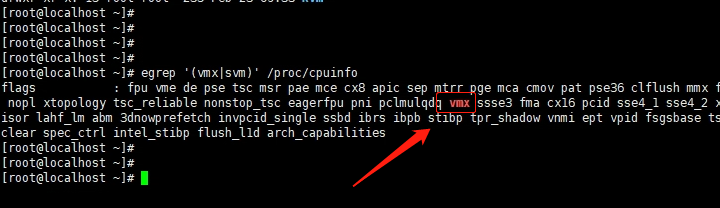
- 要有 vmx 或 svm 的标识才行。vmx标识intel，svm代表AMD。
2、安装KVM环境
|
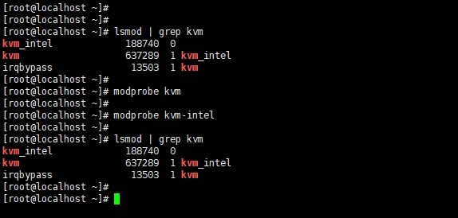
安装依赖
# 安装依赖包解析 |
可以尝试安装命令
virt-install --help |
可能报错
因为我是最小化安装Centos7.9，所以好多依赖都没有
如果报错一：
Traceback (most recent call last): |
解决方案：
yum install -y libxml2-pyton |
如果报错二：
Traceback (most recent call last): |
解决方案：
- 直接pip安装第三方依赖：chardet即可
# 安装Fedora社区打造EPEL源，官方的没有找到python-pip
yum -y install epel-release
yum -y install python-pip
pip install chardet
3、配置网络
选择桥接模式
cd /etc/sysconfig/network-scripts |
修改 ifcfg-br0
需改：
TYPE=Bridge
BOOTPROTO=static
NAME=br0
DEVICE=br0
ONBOOT=yes
删UUID一行
添加：
IPADDR=192.168.60.168
NETMASK=255.255.255.0
GATEWAY=192.168.60.1
DNS1=8.8.8.8
DNS2=114.114.114.114修改 ifcfg-ens33
需改：
BOOTPROTO=static
ONBOOT=yes
添加：
BRIDGE=br0重启 network
systemctl restart network
其实不配置桥接也可以，这样的话就是用默认
virbr0网卡,网段是192.168.122.1/24的配置桥接是为了可以和宿主机的局域网可以相互访问
三、使用KVM
使用virsh 命令来管理KVM虚拟机，可以通过：virsh -h显示详细的帮助文档。
1、可视化安装KVM虚拟机
- 如果安装了可视化依赖，可执行：
virt-manager调出可视化管理界面 - 如果是使用的是xshell软件，需要安装 XManager
- 可视化界面很简单，过程如下：
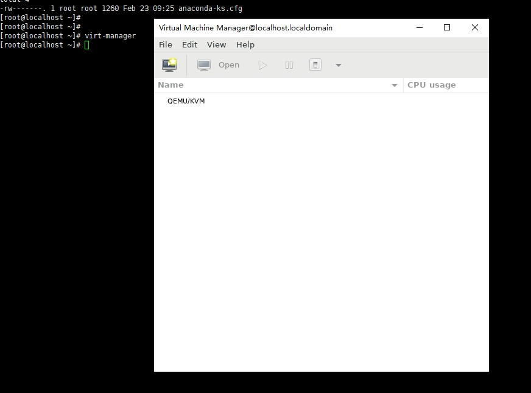
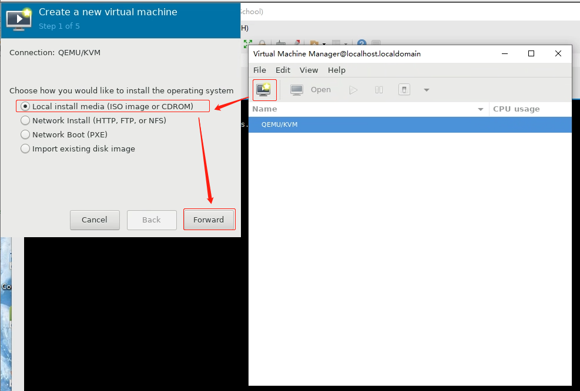
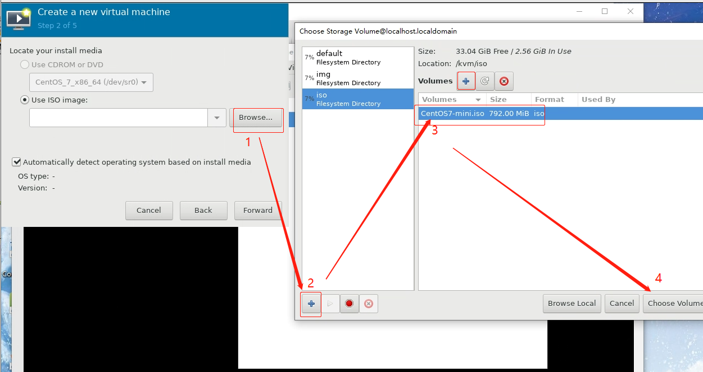
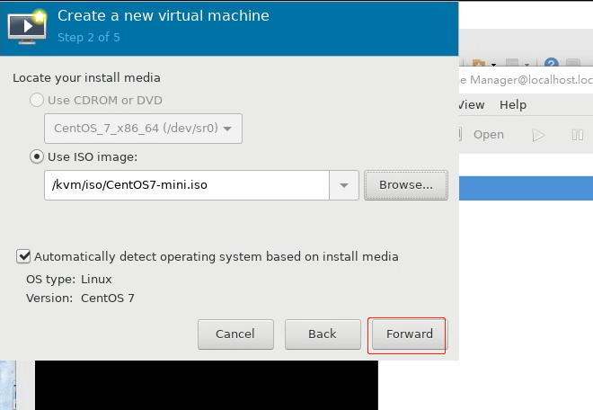
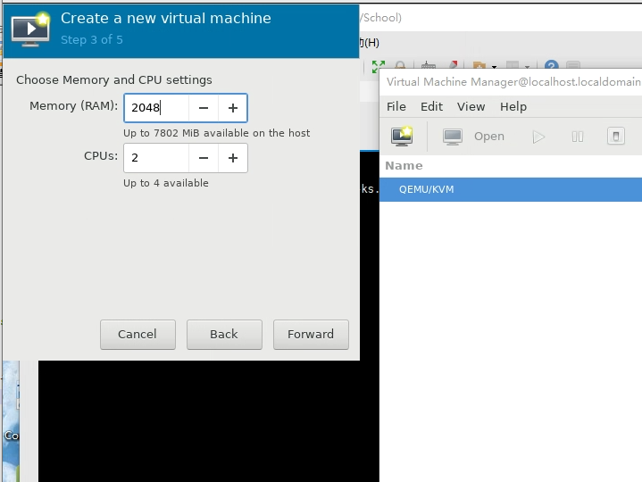
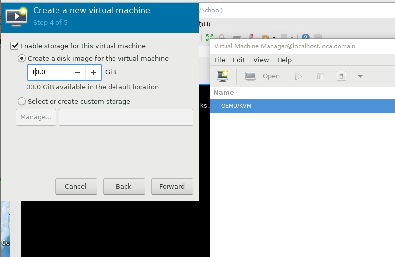
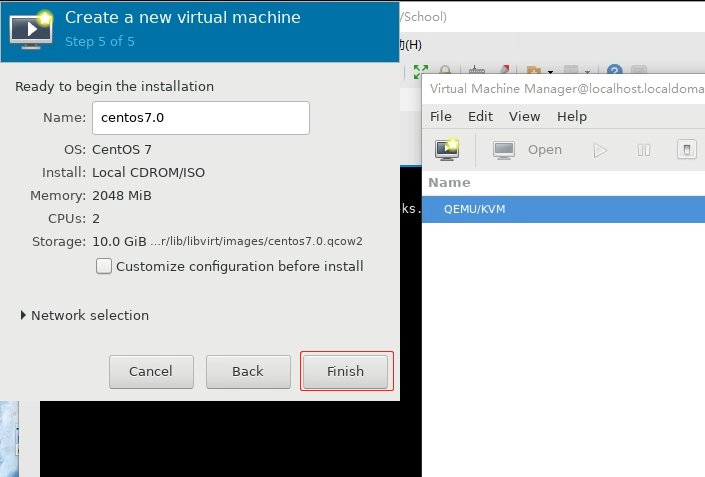
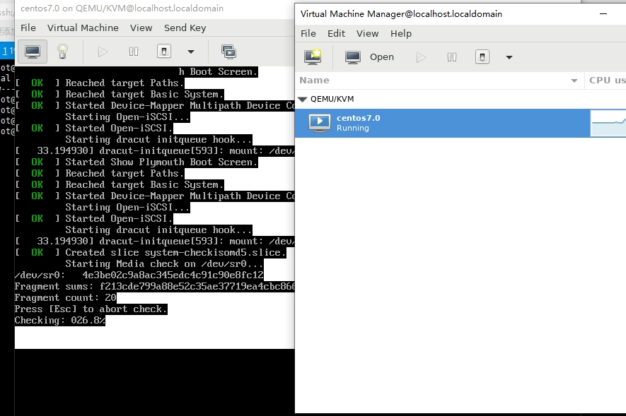
- 网卡选择上面设置的br0桥接模式。
- 如果选择的是默认的 virbr0 这个则是 NAT模式另起一个局域网，网段为：192.168.122.0/24
- 可视化界面的话，相对来说比较简单就不详细结束了。
- 下面来说说命令版本的吧
2、命令安装KVM虚拟机
- 命令安装需要用到：
virt-install命令。 - virt-install是一个使用libvirt库创建虚拟机或容器的命令行工具，参数比较多
- virt-install的命令选项可通过：
virt-install -h显示详细信息 - 如下解析常用的参数
基本参数
--name
虚拟机名称--memory
配置虚拟机内存容量，单位MB--vcpus
虚拟机cpu数量。更进一步可以通过该参数设置cpu热拔插和其他更复杂的拓扑结构。--metadata
可选，可配置虚拟机的一些属性--os-type
操作系统类型，如linux、unix或windows等
安装方式
--cdrom
指定使用cdrom光驱启动，指定镜像路径--location
本地iso路径安装方式，使用该参数指定安装，默认是看不到guest安装过程中的输出文本的，需要另外配置参数--extra-args 'console=ttyS0'--import
使用已有的磁盘镜像，直接跳过安装过程，使用第一个--disk参数指定的磁盘做启动设备
存储参数
--disk
指定虚拟硬盘文件路径，有多种介质可选。比如指定本地文件可以使用path选项，如果指定文件不存在还需要设置size参数。
网络配置
--network
指定虚拟机连接的网络配置,如：--network bridge=br0选择我们配置的桥接网卡br0
默认的话是--network default使用的是 virbr0
图形化配置
--graphics
可以不使用图形化配置：--graphics none,可以通过virt-manager进入。
也可以--graphics vnc,listen=0.0.0.0,port=5924或--graphics vnc,port=6031,keymap=en_us配置vnc
其他
--noautoconsole
不自动连接虚拟机控制台--autostart
主机开机自启动
2.1、virt-install安装Centos7
- 例子如下：
virt-install \
--name centos7 \
--memory 2048 \
--vcpus 2 \
--network bridge=br0 \
--graphics vnc \
--disk path=/kvm/img/centos7.img,size=10 \
--os-variant auto \
--location /kvm/iso/CentOS7-mini.iso \
--extra-args 'console=ttyS0' \
--noautoconsole
四、KVM相关命令
主要命令：
- vrish
- virt-install
- 参数贼多，vrish还分好几大模块的命令，如：磁盘存储、快照、网络、guest虚拟机管理…等等
1、常用virsh命令
# 查看运行的虚拟机 |
2、创建一个ISCSI存储池
预先创建好一个xml配置文件,假设文件名为
/kvm/pool/pool_iscsi,内容如下：(host为需要远程的物理机ip地址,device为iqn序列号)
<pool type='iscsi'>
<name>my_iscsi_pool</name>
<source>
<host name='192.168.1.71' port='3260'/>
<device path='iqn.2021-02.me.mibine:server.target1'/>
</source>
<target>
<path>/dev/disk/by-path</path>
</target>
</pool>在预配置好xml之后，执行如下命令:定义存储池
virsh pool-define /kvm/pool/pool_iscsi
启动存储池
(my_iscsi_pool为xml里面的name)(此时默认的状态是已经启动，但是并没有设置开机自启动)
virsh pool-start my_iscsi_pool
设置开机自启动
virsh pool-autostart my_iscsi_pool
查看pool里面的卷
virsh vol-list --pool my_iscsi_pool编辑存储池
virsh pool-edit my_iscsi_pool
删除存储池
这里需要先将存储池状态改为inactive
virsh pool-destroy my_iscsi_pool
virsh pool-delete my_iscsi_pool
取消定义
virsh pool-undefine my_iscsi_pool
安装通过ISCSI挂载的镜像
- 首先保证iscsi的镜像是有引导的完整镜像
- 然后通过
--import参数使用第一个--disk作为启动设备virt-install \
--name autorecove88 \
--memory 2048 \
--vcpus 2 \
--network bridge=br0 \
--graphics vnc \
--disk path=/dev/disk/by-path/ip-192.168.2.73:3260-iscsi-iqn.2000-03.com.dcstechnology-ods.ODS-yanfa-Quorum.kvm72-0-lun-0 \
--os-variant auto \
--noautoconsole \
--import
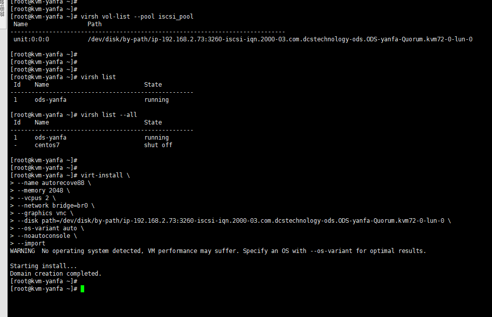
3、创建基于文件夹的存储池
创建存储池所在目录
mkdir /home/data/kvm/pool
定义存储池于该目录
virsh pool-define-as pool_name --type dir --target /home/data/kvm/pool
创建已经创建的存储池
# 创建已经创建的存储池
virsh pool-build pool_name
# 查看存储池
virsh pool-list --all
# 查看池信息
virsh pool-info pool_name
# 设置开机自启动并激活存储池
virsh pool-autostart pool_name
# 启动
virsh pool-start pool_name
# 在这个存储池上，创建一个虚拟机存储卷
virsh vol-create-as --pool pool_name test.qcow2 20G --format qcow2
# 查看pool里面的卷
virsh vol-list --pool pool_name
# 删除某个存储池下的某个卷
virsh vol-delete --pool pool_name --vol test.qcow2
4、磁盘管理
# 创建磁盘 |
五、工具篇
1、bash-completion
可以使命令参数自动补全的工具，按 Tab 键自动补全参数命令
# 安装命令自动补全 |
2、libguestfs-tools
libguestfs 是一组 Linux 下的 C 语言的 API ，用来访问虚拟机的磁盘映像文件。
该工具包内包含的工具有
- virt-cat、
- virt-df、
- virt-ls、
- virt-copy-in、
- virt-copy-out、
- virt-edit、
- guestmount、
- guestunmount、
- guestfish
- virt-list-filesystems、
- virt-list-partitions
- virt-customize
- …等等
- 安装使用如下：
# libguestfs-winsupport 使其支持windows系统镜像 |
3、vnc 连接
- 修改配置文件
vim /etc/libvirt/qemu.conf,把vnc_listen注释打开为：vnc_listen = "0.0.0.0" - 下载 noVNC，或者
git clone https://github.com/novnc/noVNC.git - 命令显示vnc的监听信息：
virsh vncdisplay --domain youDomainName, - 如果显示的是
127.0.0.1:0vnc就是5900端口，127.0.0.1:1vnc就是5901端口，以此类推… - 执行noVNC下的：
./utils/launch.sh --vnc localhost:5900。启动noVNC 前端页面，默认是6080端口 - 执行过程中，noVNC 会去 GitHub 下载 websockify，如果觉得下载太慢.
- 可先将 websockify 下载下来后，解压到vnc的 utils 文件夹下并命名为：
websockify - websockify下载地址：
https://github.com/novnc/websockify/releases - 启动成功之后，即可访问：
http://host:6080/vnc.html?host=host&port=6080,把host修改为你的ip即可。 - 防火墙记得开放6080端口。
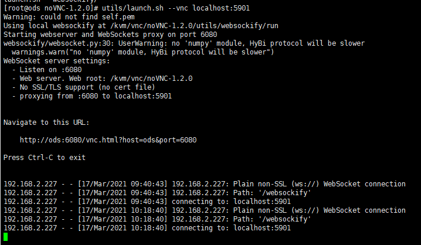